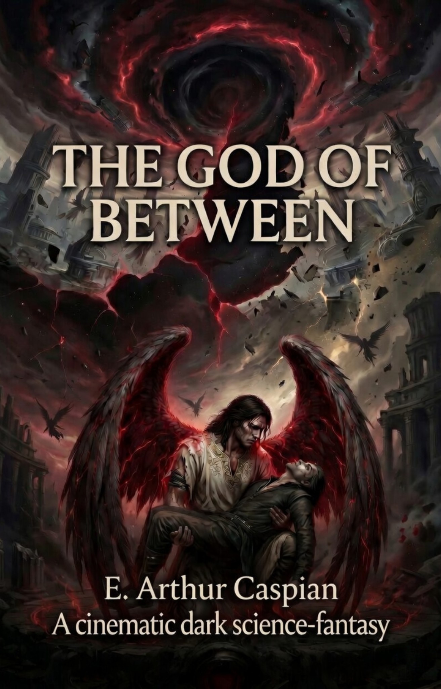

I’m an independent researcher and writer whose work moves between cosmology, quantum theory, theology, and literature. I’ve published and developed research through preprint servers, with most of my work centered on cosmology and quantum questions. As an author, my books include The God of Between and theological works such as The Governing Line. My broader aim is to explore the structure of reality, meaning, and existence through both analytical and creative writing.

My work moves between cosmology, quantum theory, theology, and literature. I publish research through preprint platforms, with much of my work centered on cosmology and quantum questions, while my creative and theological writing explores meaning, existence, and the structure of reality.
Published under E. Arthur Caspian, The Governing Line sequence develops a structured theological framework focused on meaning, doctrine, method, and intellectual synthesis.
A sci-fi dark fantasy novel exploring metaphysical tension, fractured reality, and the conflict between cosmic structure and human meaning.
View on AmazonA theology research program proposal centered on universal narrative structure, distillation, and the search for underlying coherence.
View on AmazonA continuation of the theology research program developing doctrinal architecture, interpretive sequence, and a larger systematic frame.
View on AmazonA further development of the research program focused on minimum revelation, disciplined inquiry, and theological synthesis.
View on Amazon